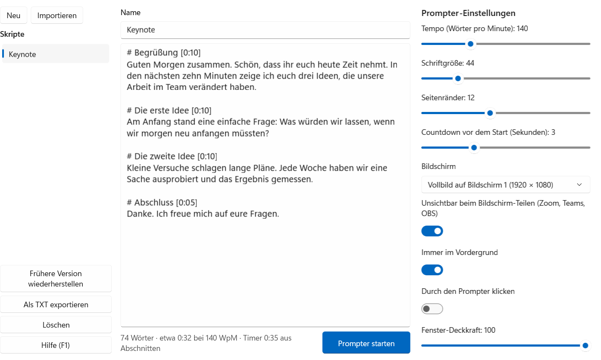

Du liest ab. Dein Publikum sieht es nicht.
SpeakAnchor zeigt dein Skript direkt unter der Webcam, und beim Teilen des Bildschirms bleibt es verborgen. Mit Redner-Timer, für Windows.
Schematische Darstellung. Getestet beim Teilen des ganzen Bildschirms in Teams und Zoom und bei Aufnahmen mit OBS und CapCut.
Alles für einen Vortrag ohne Hänger
Beim Teilen ausgeblendet
Windows hält die Fenster aus der Bildschirmaufnahme heraus. Du siehst den Text, die anderen sehen deine Folien.
Redner-Timer mit Ampel
Restzeit im Blick, und je Abschnitt die Angabe, ob du vor oder hinter deinem Plan liegst.
Tempo in Wörtern pro Minute
Weiches Scrollen, jederzeit anpassbar. Ein Mausklick hält den Text nie versehentlich an.
Klicker und Tasten
Mit dem Presenter-Klicker von Abschnitt zu Abschnitt. Strg+Alt+Leertaste startet und pausiert aus jeder App.
Handy als Fernbedienung
QR-Code scannen, fertig. Läuft mit PIN nur im lokalen Netz und braucht keine App.
Dein Text, deine Formate
TXT, Markdown, Word und PDF mit Textebene importieren. Automatisch gespeichert, mit früheren Versionen.
Spiegeln für Prompter-Glas
Horizontal und vertikal, dazu Leselinie, Vollbild auf dem zweiten Monitor und einstellbare Deckkraft.
Bleibt auf deinem PC
Kein Konto, keine Werbung, kein Tracking. Deine Skripte verlassen den Rechner nicht.
Durchklicken
Strg+Alt+K lässt Klicks durch den Prompter zum Programm dahinter. So bedienst du Folien, ohne das Fenster zu verschieben.

Was es kann, und was nicht
Das Ausblenden gilt für Bildschirmaufnahmen, also für Teilen und Aufzeichnen.
- Beamer und gespiegelte Monitore zeigen den Prompter mit, wenn er auf diesem Bild liegt.
- Lege ihn in dem Fall auf einen nicht gespiegelten Monitor.
- Eine Kamera, die auf deinen Bildschirm gerichtet ist, sieht ihn natürlich auch.
Die wichtigsten Tasten
| Leertaste | Start und Pause |
| ← → | Tempo |
| Bild auf/ab | Abschnitte, auch per Klicker |
| T | Timer anhalten |
| Strg+Alt+Leertaste | Start und Pause aus jeder App |
Einmal kaufen, fertig
Einmalkauf im Microsoft Store, ohne Abo. Der Preis kann je nach Land abweichen.
Vorher kostenlos testen
- Alle Funktionen sind in der Testversion dabei.
- Der Prompter läuft je Start 5 Minuten, und du kannst beliebig oft neu starten.
- Nach dem Kauf entfällt das Limit. Deine Skripte bleiben erhalten.
Häufige Fragen
Sehen die anderen den Prompter wirklich nicht?
In Teams und Zoom haben wir das Teilen des ganzen Bildschirms getestet, dazu Aufnahmen mit OBS und CapCut. Probier es in der Testversion mit einem zweiten Gerät aus, bevor du dich darauf verlässt.
Warum stoppt die Testversion nach 5 Minuten?
Du kannst damit alles ausprobieren. Für einen ganzen Vortrag brauchst du die Vollversion.
Brauche ich Internet?
Nein. Die App arbeitet offline. Internet braucht nur der Microsoft Store für Kauf und Updates, und die Handy-Fernbedienung nutzt dein lokales Netz.
Welche Windows-Version brauche ich?
Windows 10 ab Version 2004 oder Windows 11, auf x64 oder ARM64.
Wo landen meine Skripte?
Als einfache Textdateien in deinem lokalen App-Datenordner. Du kannst jedes Skript als TXT exportieren.
Fragen oder Probleme? Schreib an mip@gmx.biz.